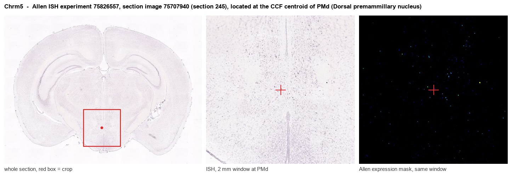
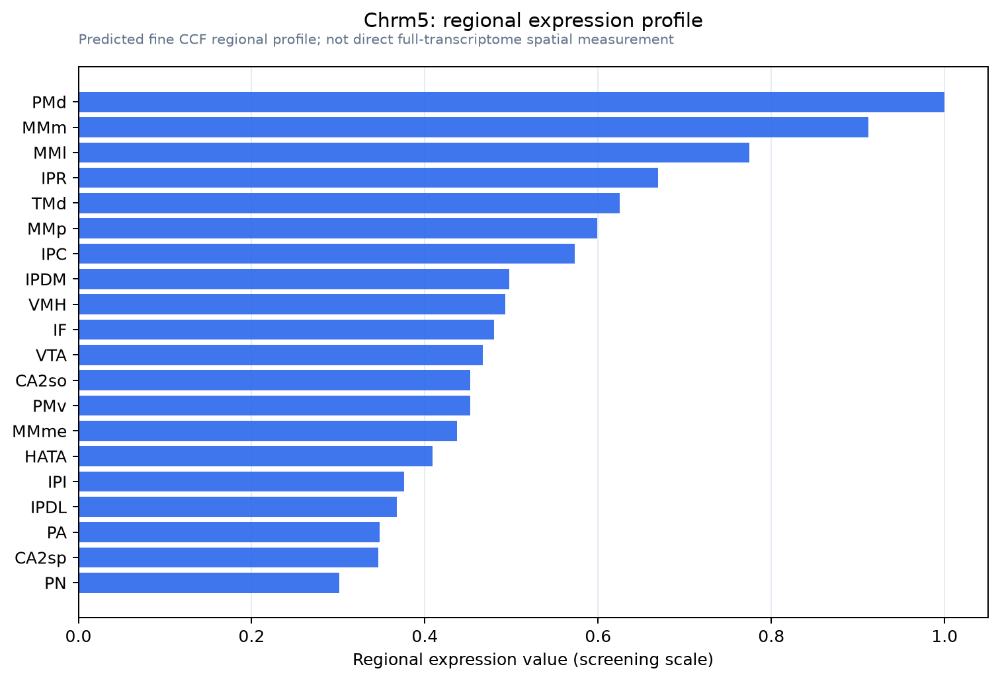

Chrm5
Muscarinic acetylcholine receptor M5
Spatial tier: RESTRICTED · Class: GPCR · Top region: PMd (Dorsal premammillary nucleus) · Positive regions: 28/554
45.4Discovery Score
39.3Targetability Score
CEvidence grade C
What this means: Chrm5: fine CCF profile is restricted toward PMd (top regions: PMd, MMm, MMl, IPR, TMd; 28 positive regions); direct spatial validation is still required.
Function in PMd: evidence, prediction, innovation
- Gene function
- Chrm5 encodes the M5 muscarinic acetylcholine receptor, the most restricted of the five subtypes. Like M1 and M3 it couples to Gq/11, activating phospholipase C, IP3/DAG and PKC, which typically depolarises neurons and closes K+ conductances. Its best-known role is slow cholinergic excitation of midbrain dopamine neurons.
- Region function
- The dorsal premammillary nucleus (PMd) is the hypothalamic predator-threat node whose glutamatergic output to dorsolateral periaqueductal gray drives escape and flight.
- Published in this region
- expression only No region-specific literature found. Chrm5 in brain has been studied almost exclusively in VTA/SNc dopamine neurons, where it mediates slow dopamine-cell activation, morphine-induced accumbens dopamine efflux and rewarding brain stimulation (Yeomans et al. 2000, 2001); RT-PCR mapping found only low, scattered Chrm5 message across the CNS (Wei et al. 1994), and reported mouse hypothalamic expression is described for ventromedial, lateral hypothalamic and mammillary territory rather than PMd specifically.
- Predicted function
- Prediction: M5 supplies slow Gq-mediated cholinergic excitation to PMd glutamatergic threat neurons, most plausibly from brainstem pedunculopontine/laterodorsal tegmental input, biasing PMd toward the depolarised state that sustains escape. Chrm5 knockout or PMd-targeted ML375 (selective M5 negative allosteric modulator) should blunt escape vigor and predator-evoked flight without changing baseline locomotion; an M5 positive allosteric modulator such as VU0238429 should lower the threat threshold for flight.
- Innovation
- ★★★★★ 5/5 M5 has essentially only been studied on dopamine neurons, and nobody has asked what it does in the predator-fear hypothalamus despite good selective allosteric ligands.
- Tools
- Chrm5 knockout mice; selective M5 negative allosteric modulator ML375 and positive allosteric modulators VU0238429/VU6008667; scopolamine/atropine as non-selective infusion controls. M5-selective antibodies are unreliable and no widely validated Chrm5-Cre driver exists - RNAscope is the practical detection route. PMd is accessible with Cck-Cre.
- References
Direct evidence located at the region

Allen ISH experiment 75826557, section image 75707940 (section 245): the section that contains the CCF centroid of Dorsal premammillary nucleus according to the Allen image-to-atlas alignment (reference_to_image), with a 2 mm window around that point. Left: whole section, red box = window. Middle: ISH signal. Right: Allen's expression-mask view of the same window. open this image in the Allen viewer
Look it up yourself: Allen Mouse Brain ISH for Chrm5Allen reference atlas: PMd (structure 980)ABC Atlas MERFISH viewer(in the ABC Atlas choose dataset MERFISH-C57BL6J-638850-CCF, colour cells by gene "Chrm5" or by parcellation_substructure "PMd")All genes confined to PMd + 3-D brain
Direct spatial evidence
MERFISH REGION LOCATOR

Regional expression figure

Predicted WMB × fine-CCF profile; not direct full-transcriptome spatial measurement.
Spatial profile
Evidence and specificity
- Evidence status
- PREDICTED_FINE
- Direct sources
- None; predicted localization only
- Exclusive threshold
- 12 positive regions out of 554
- Spatial specificity
- 0.340
- Top-region fraction
- 0.058
- Filter status
- PASS
Interpretation limits
- Cell-type-to-region projection is imputed expression, not direct spatial measurement.
- Adult reference atlases do not establish stability across age, sex, strain, state, or disease.
- Transcript abundance does not guarantee protein abundance or genetic-tool performance.